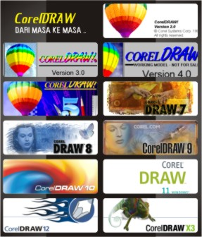

8 февраля 1989 года
8 февраля 2008 года ровно 20 лет!

Ровно 20 лет назад была продана первая коробка с графическим пакетом (тогда его можно было называть просто программой) CorelDRAW. Вот так-то. Юбилей.
CorelDRAW 2 под Windows 3.0 . Эта была простенькая, но уже вполне серьезная даже по тем временам программа, а если учесть, что FreeHand и Photoshop существовали только в версиях для МАСов - то вообще единственная программа для векторной графики на РС. Для битовой графики использовался PhotoSTYLER 1.0 .
Инсталлировался CorelDRAW 2 всего с пяти дискет, и имел свой собственный формат шрифтов WFN. Но уже тогда он был вполне удобен, неприхотлив и имел почти все основные функции, которыми славятся последующие версии. CorelDRAW 3 уже имел в своем составе PhotoPaint, в качестве шрифтов использовал ставший на то время стандартом TTF, улучшенный интерфейс. Ну, а потом новые версии стали выходить регулярно, как журнал - ежегодник. Добавлялись какие-то свойства, эффекты, но его суть оставалась прежней. Версия CorelDRAW 5 стала классической по своей мощи и простоте использования. Ну а потом начали расти размеры пакета, появлялись и исчезали экспериментальные блоки и дополнительные программы пакета (3D Motion в 6 версии пакета), 7 и 8, 9, 10, 11, 12, Х3 версии CorelDRAW знают уже все. Это достаточно большие по физическим размерам монстры, заваливающие ваше дисковое пространство всевозможными dll, но и обладающие такой же мощью работы со шрифтами, символами, векторной и битовой графикой.
К сожалению, простота работы со шрифтами в этом пакете сослужила недобрую службу рекламному дизайну. Шрифты коверкали, плющили, сжимали и растягивали кто как мог без всякой на то нужды. Да и сейчас во многих рекламных объявлениях вы можете это видеть. Да, прошу прощения, не об этом...
На сегодняшний день корпорация имеет свыше десяти миллионов зарегистрированных пользователей. Огромной популярностью пользуются графические библиотеки Corel GALLERY™ Magic в различных комбинациях клипартов (векторных рисунков и всяческих картинок-заготовок) и HQ-фото.
Здорово
Не думал что корел настолько старый.
Жаль не всегда всё новое - лучшее. Например, трейсер, который шёл с 11 версией, был намного функциональнее. (Не знаю как там в 15 версии. Ещё не пробовал)